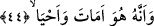
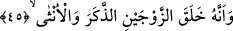

44. Öldüren de dirilten de O’dur.
“Öldüren de dirilten de O’dur.”
Ne yaratma ve ne de kesb bakımından O’ndan başkası hayat vermeye ve öldürmeye
muktedir değildir. Öldürenin te’siri, bir varlığın bünyesini bozmak ve bağlarını
koparmak suretiyle gerçekleşir. Ölüm ancak Allah katından Allah’ın fiili ile âdet üzere
hâsıl olur. Kul için sadece kesb sûretiyle bedeninde bazı tahribatlar yapması mümkün
olup bunun dışında bir öldürme fiilinin kesbinî hâiz değildir.
Diğer bir ifâdeyle, öldürme ve yaşatmaya kâdir olan O’dur. Ecel vakti geldiğinde
dünyada öldürür ve kabirde diriltir. Veya O, ölümün ve hayatın sebeplerini var edendir.
Yine şöyle vârid olmuştur ki kâfirleri câhillikle öldüren, mü’minlere ise mârifet ve bilgi
ile hayat veren O’dur. Bazılarına göre ölüm cehâleti, hayat verme ise ilmi gösterir veya
cimrilik ve kerem, adâlet veya lütuftur. Ya da men etme, ihsân ve bağıştır. “Bolluk ve
kıtlığın, baba ve çocukların ihsânı O’ndandır. Uyandıran ve uyutan, nutfe ile diri ve
canlı varlığı yaratan O’dur.”
Muhakkikler nezdinde imâte/öldürme heybet ve ihyâ/hayat verme üns ya da istitâr ve
tecellîdir. İmam Kuşeyrî der ki: “Zâhidlerin nefislerini mücâhedeyle öldürürler,
âriflerin kalplerini ise müşâhede nurlarıyla diriltirler veya kim fenâfillâh mertebesine
ulaşırsa bakàbillah kadehinden de bir yudum tattırırlar.”
Âyet-i celîle şöyle de tefsir edilmiştir: “Nefsi cismânî şehvetler ve hayvânî
lezzetlerden öldürüp kalbi rûhânî sıfat ve rabbânî ahlakla dirilten O’dur” veya “Nefsin
kendisi üzerini istilâ etmesiyle kalbi öldürerek nefsi dirilten O’dur.” Bütün bu hükümler
kalbin devamlı değişiklik arz etme/telvin makamında bulunduğu müddetçe cereyan eder.
Ancak kalp itmi’nan ve temkin makamına yükseldiği zaman kesinlikle nefse mağlup
olmaz ve bilakis Rabb’inin emri ile nefis, kalbin baskısı altında ölünceye değin ebedî
olarak mağlubiyete mahkûm olur.
Fakir [Bursevî] der ki: Allah Teâlâ’nın âyet-i kerîmede öldürmeyi diriltmeden önce
getirmesi aradaki fâsılaya riâyet içindir. Çünkü varlığın canlanmasından önce nutfe hâli,
kalbin yaşamasından evvel onun ölüm hâli ve bedenin kabirde hayat bulmasından önce
de ölüm hâli vardır. Yine aynı şekilde âyet-i kerîmede öldürme lafzının öne geçmesinin
bir diğer sebebi de muhatabları kahrın te’sirinin âcilen hâsıl edildiğine dikkat çekmek
içindir. Aynı sebepten adem/yok olma, vücuddan önce gelmektedir. Ayrıca varlığın fenâ
ve ademe doğru dönmekte oluşu; insanın iki ölüm arasındaki hayat ve iki adem
arasındaki vücud ile gururlanmasını gerektirmeyen bir durumdur. Muvaffak kılan ancak
Allah Teâlâ’dır.